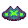
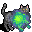
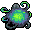

フラックス・ボーブル Flux bauble
英語版 CrawlWiki の記事「Flux bauble」(0.34 向け、2026-07-22 版)の翻訳です。原文の著者は編集履歴をご覧ください。
| 不気味に光る物質の入った小さなガラス玉だ。握りつぶすと変成のエネルギーがあなたに溢れ、あなたの肉体を根本から不安定な状態にする。
この流転の状態では、あなたの近接攻撃はずっと弱くなるが、攻撃するたびに当たった相手を変成のエネルギーで汚染する。やがて相手の体はねじれて変形し、大きなダメージを受ける。肉体の形が定まらないことで、あなたへの攻撃もずっと当たりにくくなるが、隠密を妨げるような光を放つようになる。 それぞれのガラス玉に込められた力には限りがあり、敵に広めて使い果たすと、あなたは元の姿に戻る。 |
 フラックス・ボーブルは、一時的に流転の形態に変身するボーブルだ。
フラックス・ボーブルは、一時的に流転の形態に変身するボーブルだ。
変身術師はフラックス・ボーブルを 3 個持って始まる。
基本情報
フラックス・ボーブルを発動(V)すると流転の形態に変身し、決まった回数だけ攻撃するまで続く。使うのにかかるのは 1 ターンだけで、変身を途中で解くのも 1 ターンでできる。
流転の形態には次の効果がある。
戦闘面の強化
- 徒手格闘: 基本ダメージ 3(強化なし)。
- 汚染する攻撃: 敵に攻撃を当てると、その敵を汚染する。1 回目の命中で光輪をまとわせる。3 回目の命中で悪性変異を起こし、大きなダメージを与えて、汚染をリセットする。このダメージはスキル 0 で 2d5、スキル 5 で 2d15、スキル 14 以上で 2d33 で、その間は直線的に増える。
- EV のボーナス: EV +6〜16(スキルによる)
- 近接攻撃のダメージはすべて 50% 減る。
制限
流転の形態は変異を何も抑えず、体格も変えず、HP や AC へのボーナスも持たない。
流転の形態の最低スキルは変身術 5 で、それを下回ると HP が減り、汚染の効果と EV のボーナスも弱まる。スキルの上限は 14 で、それ以上上げても効果は変わらない。
| 流転の形態 | フェリッド | オクトポード |
|---|---|---|
|  |
 |
 |


戦略
EV とダメージのボーナスは、序盤に戦いの形勢が悪いときに助けになる。
それよりも大事なのは、今使っている主な形態が目の前の脅威に対して欠点や弱点を抱えているとき、1 ターンで使える緊急ボタンになることかもしれない。今のタリスマンを直接外すより早く、このボーブルで欠点を打ち消せるのだ。たとえば死の形態のときにこれを使えば、無力化の薬を飲んだり死のとば口を唱えたりできる。
変更履歴
| 変身 | |
|---|---|
| タリスマン | ティア1: 針の形態 • 巻物の形態 ティア2: スカラベの形態 • 胞子の形態 • ヤクの形態 • メデューサの形態 ティア3: 大口の形態 • 鰻の形態 • 蟹の形態 • 人狼の形態 • 大蛇の形態 • 蜘蛛の形態 • 水の形態 ティア4: 刃の手の形態 • 竜化 • 石像の形態 • 巣の形態 • スフィンクスの形態 • 吸血鬼の形態 (コウモリ群の形態) ティア5: 嵐の形態 • 死の形態 |
| ボーブル | 流転の形態 |
| 不利な変身 | コウモリの形態 • 茸の形態 • 豚の形態 • 樹木の形態 • 霧の形態 • ジェリーの形態 |
| 神 | 殺戮の形態 |